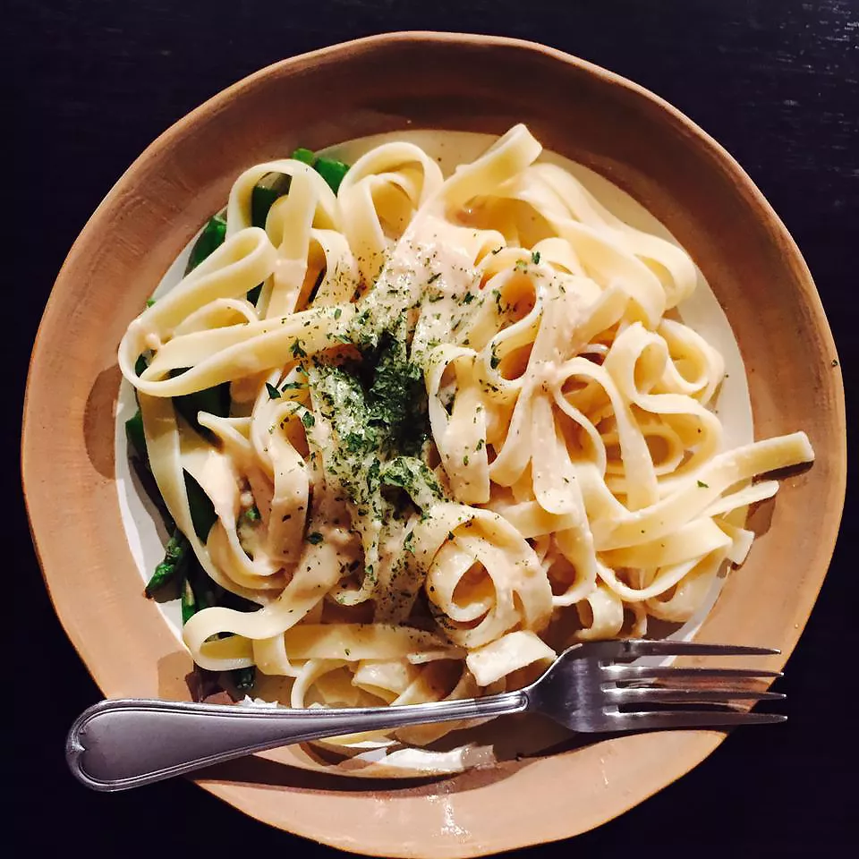

Fettuccine Alfredo

This is a recipe that I created by modifying my mother's recipe. My boyfriend is a fettuccine Alfredo connoisseur and he scrapes the pan every time! I get nothing but rave reviews when I make this dish. I must warn you, this recipe is not for the health conscious. Enjoy!
An Italian pasta dish of fresh fettuccine tossed with butter and Parmesan cheese guaranteed to satisfy your tastebuds!
Ingredients
- 24 ounces dry fettuccini pasta
- 1 cup butter
- ¾ pint heavy cream
- salt and pepper to taste
- 1 dash garlic salt
- ¾ cup grated Romano cheese
- ½ cup grated Parmesan cheese
Steps
- Bring a large pot of lightly salted water to a boil. Add fettuccini and cook for 8 to 10 minutes or until al dente; drain.
- In a large saucepan, melt butter into cream over low heat. Add salt, pepper and garlic salt. Stir in cheese over medium heat until melted; this will thicken the sauce.
- Add pasta to sauce. Use enough of the pasta so that all of the sauce is used and the pasta is thoroughly coated. Serve immediately.
Return to main page